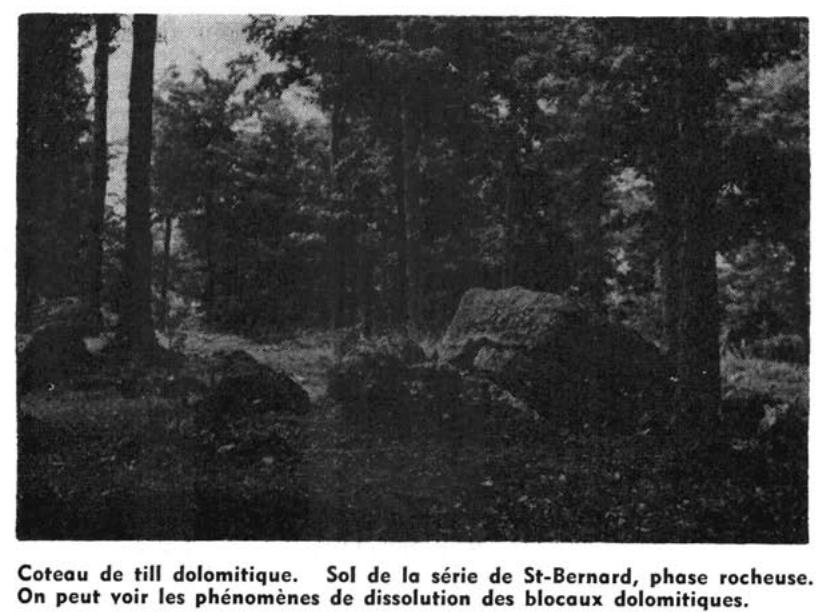

Identification & Caractéristiques Générales
La série Coteau se développe sur des sédiments fluvio-marins ou alluvionnaires constitués de sable fin à très fin, ou de loam sableux fin, d'une épaisseur variant de 3 à 8 pieds, reposant en discontinuité lithologique sur l'argile marine de la mer de Champlain. Ces dépôts quaternaires se situent dans les basses terres du Saint-Laurent et le long de ses tributaires, à des altitudes généralement comprises entre 100 et 350 pieds. La morphologie de surface se caractérise par des terrains aux pentes légèrement ondulées, souvent disposés en bandes étroites. Le profil pédologique présente sous la couche organique une mince couche éluviée (Ae) d'environ 1 à 3 pouces à l'état vierge, caractéristique des sols podzolisés ou bruns acides boisés dégradés.
Le drainage naturel de ce sol est bon, favorisé par la topographie ondulée, la position altitudinale relative et la perméabilité modérément rapide du matériau supérieur qui permet une percolation efficace de l'eau tout en maintenant une réserve utile suffisante pour les cultures. Le substratum argileux profond, souvent en pente légère vers les escarpements, facilite l'évacuation des eaux de drainage excédentaires et assure une bonne aération du profil. La texture dominante est un loam sableux fin ou une terre franche sableuse fine, exempte de pierres en surface. La réaction du sol est acide, et la fertilité naturelle inhérente est modérée, nécessitant un apport régulier d'amendements calcaires pour neutraliser l'acidité.
Sur le plan agronomique, la série Coteau est entièrement mise en valeur et occupée par diverses productions agricoles. Elle est particulièrement bien adaptée aux cultures maraîchères, notamment la pomme de terre et les primeurs, en raison de sa portance qui permet un travail hâtif au printemps et un ressuyage rapide après les précipitations. Les limitations agronomiques principales résident dans la faiblesse de la réserve organique initiale et la fertilité naturelle modérée. La régie de ces sols exige le maintien rigoureux du taux de matière organique par l'incorporation de fumier de ferme ou l'enfouissement d'engrais verts (légumineuses, sarrasin, seigle), combinée à l'utilisation raisonnée d'engrais minéraux complets et au chaulage pour optimiser les rendements.
Classification Taxonomique & Environnement Pédologique
| Ordre Pédologique | Podzolique |
|---|---|
| Grand Groupe (SCSS) | Podzol humo-ferrique |
| Sous-Groupe Taxonomique | Podzol humo-ferrique orthique |
| Famille Pédologique | Loameuse-grossière, mixte sableux, neutre |
| Mode de Dépôt Parental | Fluviatile |
| Classe de Drainage Naturel | Bien drainé |
| Régime Thermique & Humidité | Doux / Semi-aride |
Description Morphologique du Profil Type
Séquences génétiques des horizons pédologiques caractérisant le profil type représentatif de la série Coteau :
Profil représentatif — Comté de Argenteuil
✓ Source : Comté de Argenteuil — Page 77Couleur Munsell : Non précisée
Structure & Consistance : Granuleuse fine très friable et structure monogranulaire
Description morphologique : Terre franche sableuse fine, brune; structure granuleuse fine très friable et structure monogranulaire; capacité passable de rétention d'eau; pH 5.3-5.8.
Couleur Munsell : Non précisée
Structure & Consistance : Polyédrique à granulaire
Description morphologique : Terre franche sableuse, fine, brun rougeâtre pâle; très friable; quelques granules fins parmi les grains simples; pH 5.3-6.0.
Couleur Munsell : Non précisée
Structure & Consistance : Monogranulaire
Description morphologique : Terre franche sableuse légère, brun jaunâtre clair à sable limoneux fin; structure monogranulaire; capacité de rétention d'eau plus faible que dans l'horizon B 21 ; pH 5.3-6.3.
Couleur Munsell : Non précisée
Structure & Consistance : Polyédrique à granulaire
Description morphologique : Sable limoneux fin à terre franche sableuse fine, légère, gris brunâtre clair à gris pâle; pH 6.2-6.7.
Couleur Munsell : Non précisée
Structure & Consistance : Polyédrique à granulaire
Description morphologique : Argile marine.
Profil cultivé (agricole) — Comté de Gatineau
✓ Source : Comté de Gatineau — Page 78Couleur Munsell : 10YR 4/3
Structure & Consistance : Granuleuse fine parmi les grains de sable
Description morphologique : Loam sableux fin, brun (10YR 4/3); structure granuleuse fine parmi les grains de sable; très friable; très perméable; pH 5.3 à 5.8.
Couleur Munsell : 10YR 5/8
Structure & Consistance : Granuleuse
Description morphologique : Loam sableux fin, brun jaunâtre (10YR 5/8); structure granuleuse; et monogranulaire; très friable; très perméable; pH 5.3 à 6.0.
Couleur Munsell : 2.5YR 5/6
Structure & Consistance : Monogranulaire
Description morphologique : Loam sableux fin, olive pâle (2.5YR 5/6); structure monogranulaire; très perméable; pH 5.3 à 6.3.
Couleur Munsell : 2.5Y 6/2, 5Y 5/3
Structure & Consistance : Polyédrique à granulaire
Description morphologique : Loam sableux fin à sable loameux fin, gris brunâtre pâle à olive (2.5Y 6/2-5Y 5/3); pH 6.2 à 6.7.
Couleur Munsell : Non précisée
Structure & Consistance : Polyédrique à granulaire
Description morphologique : Argile.
Profil cultivé (agricole) — Comté de Joliette
✓ Source : Comté de Joliette — Page 52Couleur Munsell : 7.5YR 6/4
Structure & Consistance : Polyédrique à granulaire
Description morphologique : Loam sableux, friable, brun clair (7.5YR 6/4), consistance meuble.
Couleur Munsell : 5YR 6/4
Structure & Consistance : Polyédrique à granulaire
Description morphologique : Loam sableux, friable, brun rougeâtre pâle (5YR 6/4), consistance meuble.
Couleur Munsell : 10YR 6/4
Structure & Consistance : Polyédrique à granulaire
Description morphologique : Loam sableux, friable, brun jaunâtre pâle, (10YR 6/4), consistance meuble.
Couleur Munsell : 2.5Y 7/4
Structure & Consistance : Polyédrique à granulaire
Description morphologique : Loam sableux, friable, jaune pâle (2.5Y 7/4), consistance meuble.
Couleur Munsell : 2.5Y 6/0
Structure & Consistance : Polyédrique à granulaire
Description morphologique : Sable fin, friable, gris (2.5Y 6/0), consistance meuble.
Profil forestier (sous boisé) — Comté de L'assomption
✓ Source : Comté de L'assomption — Page 66Couleur Munsell : 10YR 5/3
Structure & Consistance : Polyédrique à granulaire
Description morphologique : Loam sableux fin, brun (10YR 5/3); structures granuleuse fine et monogranulaire; très friable et très perméable; pH 5.3 à 5.8.
Couleur Munsell : 10YR 5/8
Structure & Consistance : Polyédrique à granulaire
Description morphologique : Loam sableux fin, brun jaunâtre (10YR 5/8); structures granuleuse fine et monogranulaire; très friable et très perméable; pH 5.3 à 6.0.
Couleur Munsell : 2.5Y 5/6
Structure & Consistance : Monogranulaire
Description morphologique : Loam sableux fin, olive pâle (2.5Y 5/6); structure monogranulaire; très perméable; pH 5.3 à 6.3.
Couleur Munsell : 2.5Y 6/2, 5Y 5/3
Structure & Consistance : Polyédrique à granulaire
Description morphologique : Loam sableux fin à sable fin loameux, olive à gris brunâtre pâle; (2.5Y 6/2-5Y 5/3).
Couleur Munsell : Non précisée
Structure & Consistance : Polyédrique à granulaire
Description morphologique : Argile grise, massive et peu perméable.
Profil représentatif — Comté de Soulanges
✓ Source : Comté de Soulanges — Page 42Couleur Munsell : Non précisée
Structure & Consistance : Particulaire
Description morphologique : Terre franche sableuse fine, brun clair, petits granules très friables, par matière organique à structure particulaire.
Couleur Munsell : Non précisée
Structure & Consistance : Particulaire
Description morphologique : Terre franche sableuse fine, brun rougeâtre pâle, structure particulaire, très friable.
Couleur Munsell : Non précisée
Structure & Consistance : Particulaire
Description morphologique : Terre franche sableuse fine brun jaunâtre pâle, structure particulaire, meuble.
Couleur Munsell : Non précisée
Structure & Consistance : Polyédrique à granulaire
Description morphologique : Sable très fin, gris jaunâtre.
Couleur Munsell : Non précisée
Structure & Consistance : Polyédrique à granulaire
Description morphologique : Sable fin gris.
Couleur Munsell : Non précisée
Structure & Consistance : Polyédrique à granulaire
Description morphologique : Argile grise.
Profils Photographiques & Planches de Terrain
Documents iconographiques, figures pédologiques et coupes de terrain documentées dans les mémoires d'inventaire pour de la série Coteau :

Propriétés Physico-Chimiques & Analyses de Laboratoire
| Horizon | Texture | pH (H₂O) | M.O. % | C.E.C. (meq/100g) | Sable % | Limon % | Argile % | Ca éch. | Mg éch. | K éch. | Cond. hydr. (cm/h) | Densité |
|---|---|---|---|---|---|---|---|---|---|---|---|---|
| 1 | Loam sableux | 6.0 | 3.26 | 15.3 | 68.0 | 24.0 | 8.0 | 4.44 | 1.34 | 0.07 | 0.83 | None |
| 2 | Loam sableux | 6.2 | 1.1 | 11.1 | 75.0 | 16.0 | 9.0 | 2.62 | 0.77 | 0.05 | 1.29 | None |
Particularités Régionales, Phases & Variantes Pédologiques
Déclinaisons régionales, faciès texturaux, phases d'érosion ou de pierrosité et variantes cartographiées par étude pour de la série Coteau :
| Étude Régionale | Symbole | Appellation / Phase / Variante | Différenciation avec la série type (Analyse pédologique) |
|---|---|---|---|
| Comté de Argenteuil | Ct |
Coteau loam sableux très fin | Modalité modale de référence (type de base de la série). |
| Comté de Gatineau | Ct |
Coteau loam sableux très fin | Conforme à la série type de référence (caractéristiques texturales et drainage identiques). |
| Comté de Hull | Ct |
Coteau loam sableux très fin | Conforme à la série type de référence (caractéristiques texturales et drainage identiques). |
| Comté de Joliette | Ct |
Coteau loam sableux | Conforme à la série type de référence (caractéristiques texturales et drainage identiques). |
| Comté de L'assomption | Ct |
Coteau loam sableux très fin | Conforme à la série type de référence (caractéristiques texturales et drainage identiques). |
| Comté de Soulanges | C |
Coteau loam sableux fin | Conforme à la série type de référence (caractéristiques texturales et drainage identiques). |
Distribution Pédo-Paysagère & Représentativité Cartographique (Couverture PPS 2026)
- Soulanges loam sableux très fin (SOG) — co-occurrente dans 24 polygone(s)
- Pontiac loam limoneux à loam limono-argileux (PTC) — co-occurrente dans 17 polygone(s)
- Rideau argile (RDU) — co-occurrente dans 13 polygone(s)
Aptitudes Agronomiques, Hydropédologie & Conservation des Sols
Indicateurs Hydropédologiques & Vulnérabilité à l'Érosion (BDHP 2026)
Interprétation BDHP : Potentiel de ruissellement modérément faible. Infiltration modérée avec textures moyennes à modérément grossières.
Classement selon l'Inventaire des Terres du Canada (ITC / CLI) : Classe 1.
- Potentiel agricole : Terroir adapté aux cultures régionales selon la texture dominante et la régie de drainage.
- Contraintes majeures : Bien drainé. Risque d'engorgement temporaire ou d'excès d'eau printanier.
- Gestion & Aménagement : Drainage souterrain ou superficiel préconisé sur les terres planes. Chaulage et apport organique régulier selon les bilans agronomiques.
- Cultures adaptées : Grandes cultures (maïs, soya, céréales), prairies fourragères et cultures maraîchères selon le contexte géomorphologique.